Agarose ctDNA
Scott Saunders
08_13_19
library(tidyverse)
library(cowplot)
library(broom)
library(modelr)
library(viridis)
library(lubridate)
library(hms)
library(knitr)
library(kableExtra)
knitr::opts_chunk$set(tidy.opts=list(width.cutoff=60),tidy=TRUE, echo = TRUE, message=FALSE, warning=FALSE, fig.align="center")
source("../../tools/echem_processing_tools.R")
source("../../tools/plotting_tools.R")
theme_set(theme_1())Transfer (#2)
SWV
transfer2_data_path = "../data/transfer_2/"
# divide swv into rep and subrep and then subtract 1 from rep
# to match with GC
SWV_transfer2_filenames <- dir(path = transfer2_data_path, pattern = "[swv]+.+[txt]$")
SWV_transfer2_file_paths <- paste(transfer2_data_path, SWV_transfer2_filenames,
sep = "")
swv_transfer2_data_cols <- c("E", "i1", "i2")
filename_cols = c("echem", "rep")
swv_skip_rows = 18
swv_transfer2_data <- echem_import_to_df(filenames = SWV_transfer2_filenames,
file_paths = SWV_transfer2_file_paths, data_cols = swv_transfer2_data_cols,
skip_rows = swv_skip_rows, filename_cols = filename_cols,
rep = T, PHZadded = F)
ggplot(swv_transfer2_data, aes(x = E, y = current, color = rep,
group = rep)) + geom_path() + facet_wrap(~electrode, scales = "free") +
scale_color_viridis() + scale_x_reverse()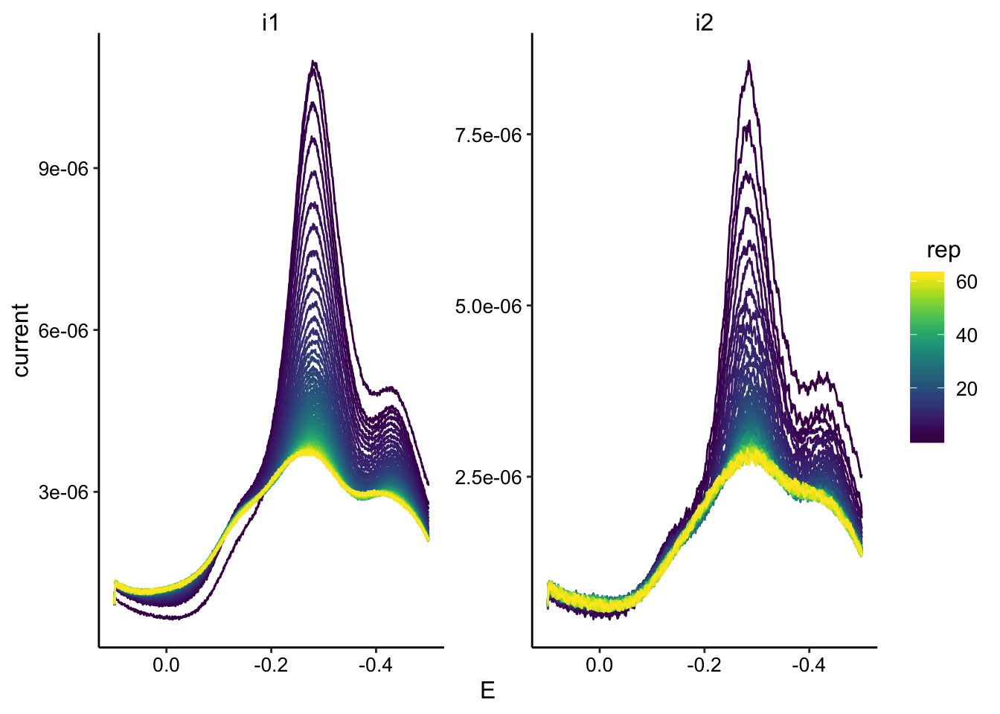
swv_transfer2_max <- swv_transfer2_data %>% group_by(rep, electrode) %>%
filter(E < -0.15 & E > -0.35) %>% mutate(max_current = max(abs(current))) %>%
filter(abs(current) == max_current)
ggplot(swv_transfer2_max, aes(x = minutes, y = max_current, color = electrode)) +
geom_point()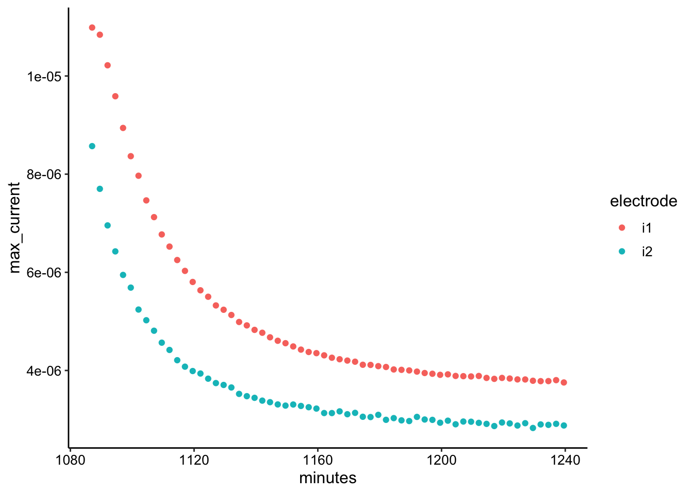
ggplot(swv_transfer2_data, aes(x = E, y = current, color = rep,
group = rep)) + geom_path() + geom_point(data = swv_transfer2_max,
aes(x = E, y = max_current), color = "red", size = 2) + facet_wrap(~electrode,
scales = "free") + scale_color_viridis() + scale_x_reverse()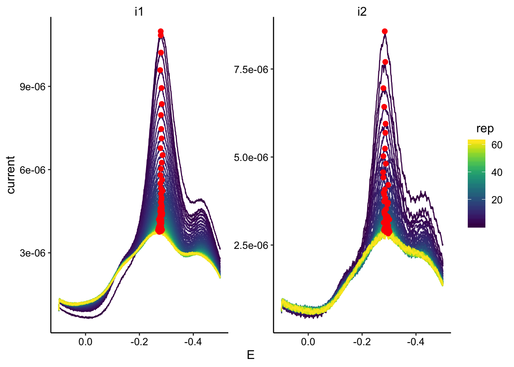
GC
transfer2_data_path = "../data/transfer_2/"
# divide swv into rep and subrep and then subtract 1 from rep
# to match with GC
GC_transfer2_filenames <- dir(path = transfer2_data_path, pattern = "[gc]+.+[txt]$")
GC_transfer2_file_paths <- paste(transfer2_data_path, GC_transfer2_filenames,
sep = "")
GC_transfer2_data_cols <- c("E", "i1", "i2")
filename_cols = c("echem", "rep")
GC_skip_rows = 21
GC_transfer2_data <- echem_import_to_df(filenames = GC_transfer2_filenames,
file_paths = GC_transfer2_file_paths, data_cols = GC_transfer2_data_cols,
skip_rows = GC_skip_rows, filename_cols = filename_cols,
rep = T, PHZadded = F)
ggplot(GC_transfer2_data, aes(x = E, y = current, color = rep,
group = rep)) + geom_path() + facet_wrap(~electrode, scales = "free") +
scale_color_viridis() + scale_x_reverse()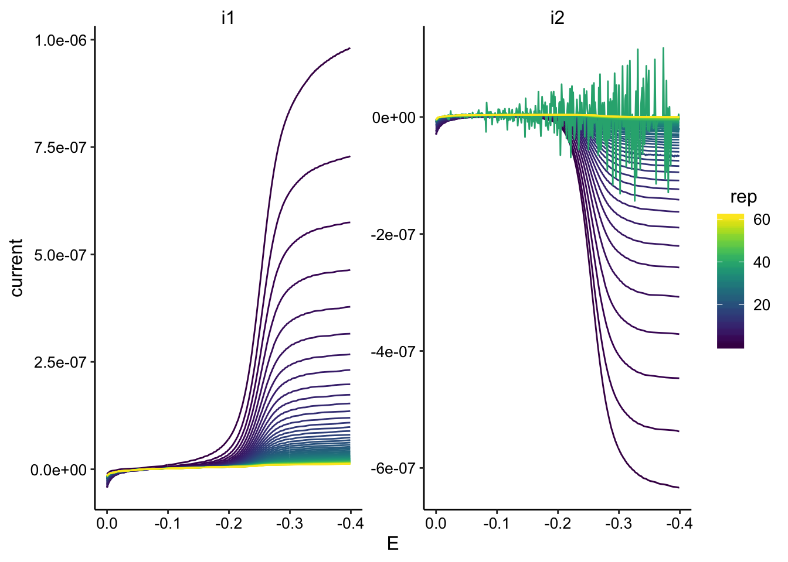
GC_transfer2_max <- GC_transfer2_data %>% group_by(rep, electrode) %>%
filter(E < -0.2) %>% mutate(max_current = max(abs(current))) %>%
filter(abs(current) == max_current)
ggplot(GC_transfer2_max, aes(x = minutes, y = max_current, color = electrode)) +
geom_point()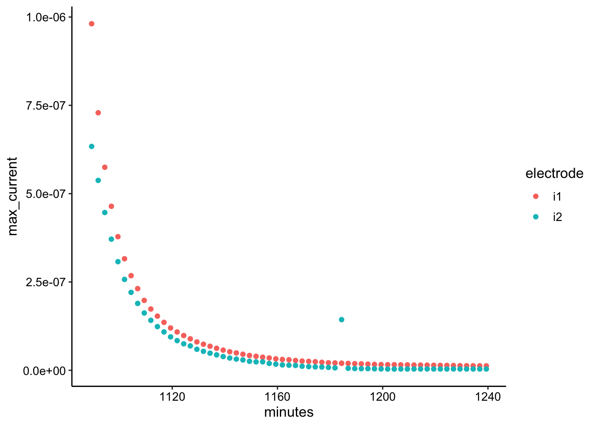
ggplot(GC_transfer2_data, aes(x = E, y = abs(current), color = rep,
group = rep)) + geom_path() + geom_point(data = GC_transfer2_max,
aes(x = E, y = max_current), color = "red", size = 2) + facet_wrap(~electrode) +
scale_color_viridis() + scale_x_reverse()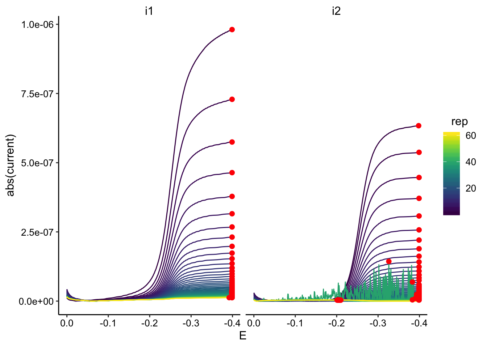
SWV vs. GC
tran_max_comb_i1 <- left_join(swv_transfer2_max %>% ungroup() %>%
filter(electrode == "i1") %>% mutate(rep = rep - 1), GC_transfer2_max %>%
filter(electrode == "i2"), by = c("rep"), suffix = c("_swv",
"_gc"))
ggplot(tran_max_comb_i1, aes(x = max_current_swv, y = max_current_gc)) +
geom_point() + geom_smooth(data = tran_max_comb_i1 %>% filter(rep <
10), method = "lm")
dap_from_swvGC <- function(m, t_p = 1/(2 * 300)) {
psi <- 0.7
# psi <- 0.75 A <- 0.013 #cm^2
A <- 0.025 #cm^2
S <- 18.4 #cm
d_ap <- (m * A * psi)^2/(S^2 * pi * t_p)
d_ap
}lm_tran2 <- tidy(lm(max_current_gc ~ max_current_swv, data = tran_max_comb_i1 %>%
filter(rep < 10)), conf.int = T) %>% filter(term == "max_current_swv") %>%
mutate(dap = dap_from_swvGC(m = estimate)) %>% mutate(dap_high = dap_from_swvGC(m = conf.high)) %>%
mutate(dap_low = dap_from_swvGC(m = conf.low)) %>% mutate(dataset = "SWVvsGC")
lm_tran2 %>% kable() %>% kable_styling()| term | estimate | std.error | statistic | p.value | conf.low | conf.high | dap | dap_high | dap_low | dataset |
|---|---|---|---|---|---|---|---|---|---|---|
| max_current_swv | 0.1149031 | 0.0047281 | 24.30223 | 1e-07 | 0.1037229 | 0.1260832 | 2.3e-06 | 2.7e-06 | 1.9e-06 | SWVvsGC |
tran_max_comb_i2 <- left_join(swv_transfer2_max %>% ungroup() %>%
filter(electrode == "i2") %>% mutate(rep = rep - 1), GC_transfer2_max %>%
filter(electrode == "i2"), by = c("rep"), suffix = c("_swv",
"_gc"))
ggplot(tran_max_comb_i2, aes(x = max_current_swv, y = max_current_gc)) +
geom_point() + geom_smooth(data = tran_max_comb_i2 %>% filter(rep <
10), method = "lm")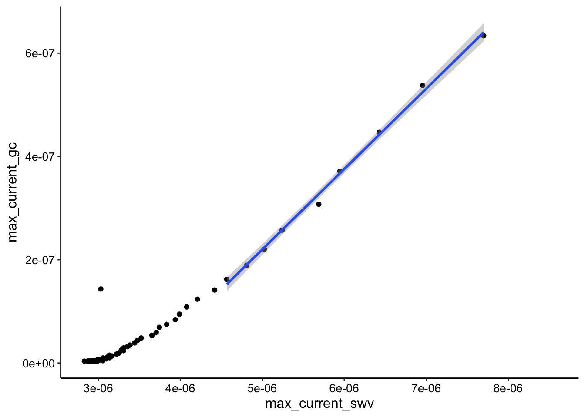
lm_tran2_i2 <- tidy(lm(max_current_gc ~ max_current_swv, data = tran_max_comb_i2 %>%
filter(rep < 10)), conf.int = T) %>% filter(term == "max_current_swv") %>%
mutate(dap = dap_from_swvGC(m = estimate)) %>% mutate(dap_high = dap_from_swvGC(m = conf.high)) %>%
mutate(dap_low = dap_from_swvGC(m = conf.low)) %>% mutate(dataset = "SWVvsGC")
lm_tran2_i2 %>% kable() %>% kable_styling()| term | estimate | std.error | statistic | p.value | conf.low | conf.high | dap | dap_high | dap_low | dataset |
|---|---|---|---|---|---|---|---|---|---|---|
| max_current_swv | 0.1556442 | 0.0034706 | 44.84624 | 0 | 0.1474375 | 0.1638509 | 4.2e-06 | 4.6e-06 | 3.8e-06 | SWVvsGC |
Transfer Again (#3)
SWV
transfer3_data_path = "../data/transfer_3/"
# divide swv into rep and subrep and then subtract 1 from rep
# to match with GC
SWV_transfer3_filenames <- dir(path = transfer3_data_path, pattern = "[swv]+.+[txt]$")
SWV_transfer3_file_paths <- paste(transfer3_data_path, SWV_transfer3_filenames,
sep = "")
swv_transfer3_data_cols <- c("E", "i1", "i2")
filename_cols = c("echem", "rep")
swv_skip_rows = 18
swv_transfer3_data <- echem_import_to_df(filenames = SWV_transfer3_filenames,
file_paths = SWV_transfer3_file_paths, data_cols = swv_transfer3_data_cols,
skip_rows = swv_skip_rows, filename_cols = filename_cols,
rep = T, PHZadded = F) %>% mutate(minutes = ifelse(minutes <
1000, minutes + 1440, minutes))
ggplot(swv_transfer3_data, aes(x = E, y = current, color = rep,
group = rep)) + geom_path() + facet_wrap(~electrode, scales = "free") +
scale_color_viridis() + scale_x_reverse()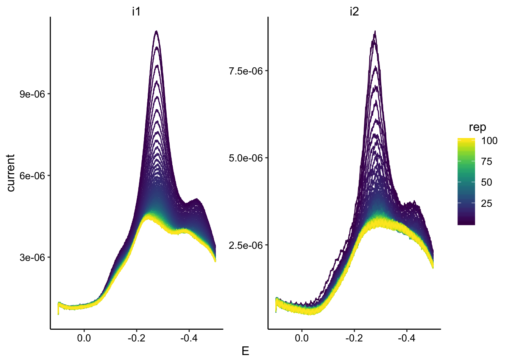
swv_transfer3_max <- swv_transfer3_data %>% group_by(rep, electrode) %>%
filter(E < -0.15 & E > -0.35) %>% mutate(max_current = max(abs(current))) %>%
filter(abs(current) == max_current)
ggplot(swv_transfer3_max, aes(x = minutes, y = max_current, color = electrode)) +
geom_point()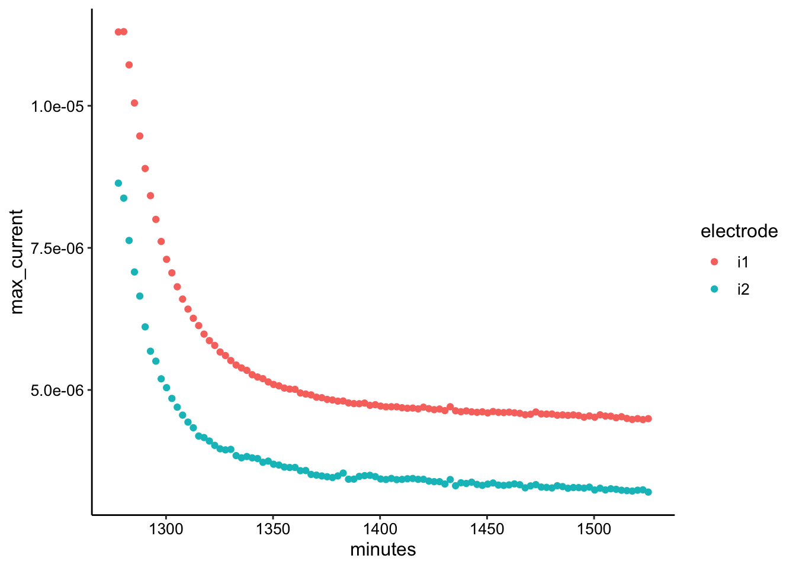
ggplot(swv_transfer3_data, aes(x = E, y = current, color = rep,
group = rep)) + geom_path() + geom_point(data = swv_transfer3_max,
aes(x = E, y = max_current), color = "red", size = 2) + facet_wrap(~electrode,
scales = "free") + scale_color_viridis() + scale_x_reverse()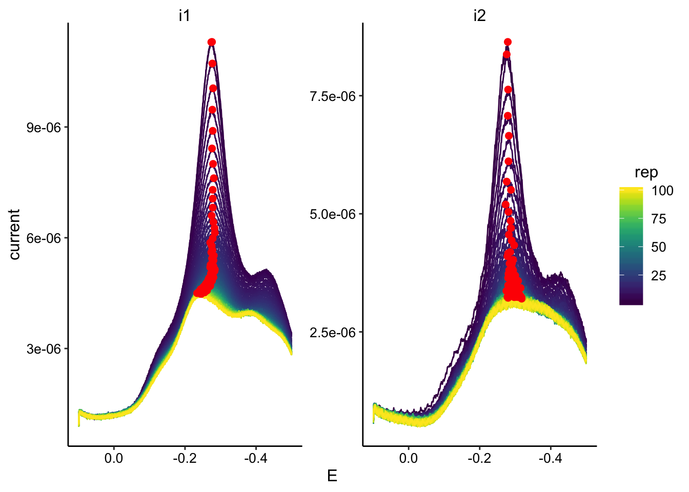
GC
transfer3_data_path = "../data/transfer_3/"
# divide swv into rep and subrep and then subtract 1 from rep
# to match with GC
GC_transfer3_filenames <- dir(path = transfer3_data_path, pattern = "[gc]+.+[txt]$")
GC_transfer3_file_paths <- paste(transfer3_data_path, GC_transfer3_filenames,
sep = "")
GC_transfer3_data_cols <- c("E", "i1", "i2")
filename_cols = c("echem", "rep")
GC_skip_rows = 21
GC_transfer3_data <- echem_import_to_df(filenames = GC_transfer3_filenames,
file_paths = GC_transfer3_file_paths, data_cols = GC_transfer3_data_cols,
skip_rows = GC_skip_rows, filename_cols = filename_cols,
rep = T, PHZadded = F) %>% mutate(minutes = ifelse(minutes <
1000, minutes + 1440, minutes))
ggplot(GC_transfer3_data, aes(x = E, y = current, color = rep,
group = rep)) + geom_path() + facet_wrap(~electrode, scales = "free") +
scale_color_viridis() + scale_x_reverse()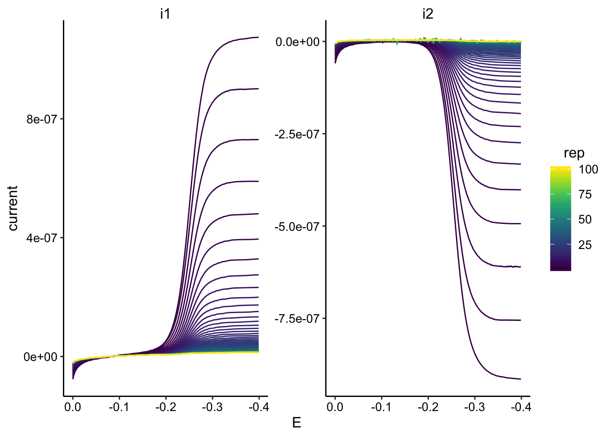
GC_transfer3_max <- GC_transfer3_data %>% group_by(rep, electrode) %>%
filter(E < -0.2) %>% mutate(max_current = max(abs(current))) %>%
filter(abs(current) == max_current)
ggplot(GC_transfer3_max, aes(x = minutes, y = max_current, color = electrode)) +
geom_point()
ggplot(GC_transfer3_data, aes(x = E, y = abs(current), color = rep,
group = rep)) + geom_path() + geom_point(data = GC_transfer3_max,
aes(x = E, y = max_current), color = "red", size = 2) + facet_wrap(~electrode) +
scale_color_viridis() + scale_x_reverse()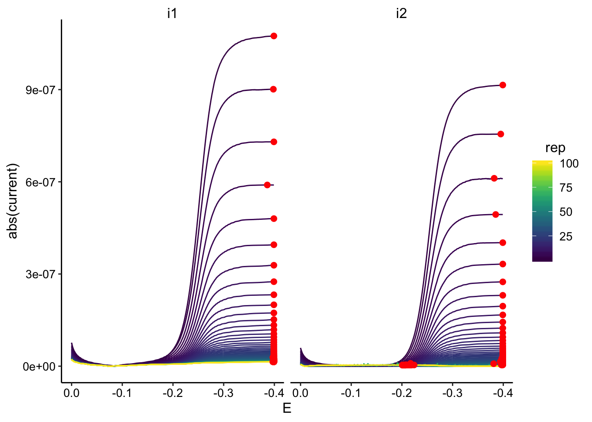
SWV vs. GC
tran3_max_comb_i1 <- left_join(swv_transfer3_max %>% ungroup() %>%
filter(electrode == "i1") %>% mutate(rep = rep - 1), GC_transfer3_max %>%
filter(electrode == "i2"), by = c("rep"), suffix = c("_swv",
"_gc"))
ggplot(tran3_max_comb_i1, aes(x = max_current_swv, y = max_current_gc)) +
geom_point() + geom_smooth(data = tran3_max_comb_i1 %>% filter(rep <
10), method = "lm")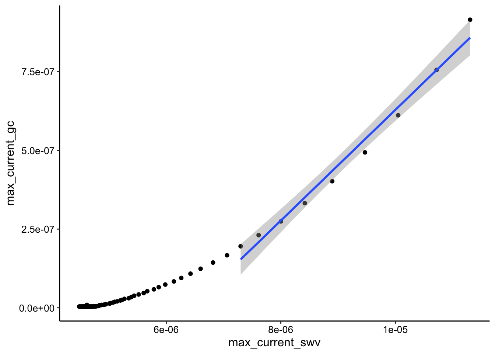
lm_tran3 <- tidy(lm(max_current_gc ~ max_current_swv, data = tran3_max_comb_i1 %>%
filter(rep < 10)), conf.int = T) %>% filter(term == "max_current_swv") %>%
mutate(dap = dap_from_swvGC(m = estimate)) %>% mutate(dap_high = dap_from_swvGC(m = conf.high)) %>%
mutate(dap_low = dap_from_swvGC(m = conf.low)) %>% mutate(dataset = "SWVvsGC")
lm_tran3 %>% kable() %>% kable_styling()| term | estimate | std.error | statistic | p.value | conf.low | conf.high | dap | dap_high | dap_low | dataset |
|---|---|---|---|---|---|---|---|---|---|---|
| max_current_swv | 0.1758578 | 0.009189 | 19.13789 | 3e-07 | 0.1541293 | 0.1975863 | 5.3e-06 | 6.7e-06 | 4.1e-06 | SWVvsGC |
tran3_max_comb_i2 <- left_join(swv_transfer3_max %>% ungroup() %>%
filter(electrode == "i2") %>% mutate(rep = rep - 1), GC_transfer3_max %>%
filter(electrode == "i2"), by = c("rep"), suffix = c("_swv",
"_gc"))
ggplot(tran3_max_comb_i2, aes(x = max_current_swv, y = max_current_gc)) +
geom_point() + geom_smooth(data = tran3_max_comb_i2 %>% filter(rep <
10), method = "lm")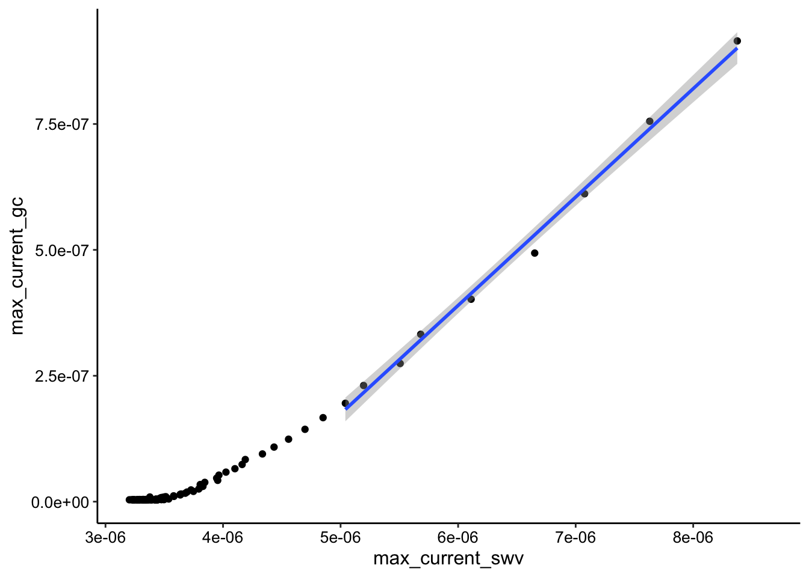
lm_tran3_i2 <- tidy(lm(max_current_gc ~ max_current_swv, data = tran3_max_comb_i2 %>%
filter(rep < 10)), conf.int = T) %>% filter(term == "max_current_swv") %>%
mutate(dap = dap_from_swvGC(m = estimate)) %>% mutate(dap_high = dap_from_swvGC(m = conf.high)) %>%
mutate(dap_low = dap_from_swvGC(m = conf.low)) %>% mutate(dataset = "SWVvsGC")
lm_tran3_i2 %>% kable() %>% kable_styling()| term | estimate | std.error | statistic | p.value | conf.low | conf.high | dap | dap_high | dap_low | dataset |
|---|---|---|---|---|---|---|---|---|---|---|
| max_current_swv | 0.2152556 | 0.0058211 | 36.97831 | 0 | 0.2014908 | 0.2290204 | 8e-06 | 9.1e-06 | 7e-06 | SWVvsGC |
Soak (#2)
SWV
soak2_data_path = "../data/soak_2/"
# divide swv into rep and subrep and then subtract 1 from rep
# to match with GC
SWV_soak2_filenames <- dir(path = soak2_data_path, pattern = "[swv]+.+[txt]$")
SWV_soak2_file_paths <- paste(soak2_data_path, SWV_soak2_filenames,
sep = "")
swv_soak2_data_cols <- c("E", "i1", "i2")
filename_cols = c("echem", "rep")
swv_skip_rows = 18
swv_soak2_data <- echem_import_to_df(filenames = SWV_soak2_filenames,
file_paths = SWV_soak2_file_paths, data_cols = swv_soak2_data_cols,
skip_rows = swv_skip_rows, filename_cols = filename_cols,
rep = T, PHZadded = F)
ggplot(swv_soak2_data, aes(x = E, y = current, color = rep, group = rep)) +
geom_path() + facet_wrap(~electrode, scales = "free") + scale_color_viridis() +
scale_x_reverse()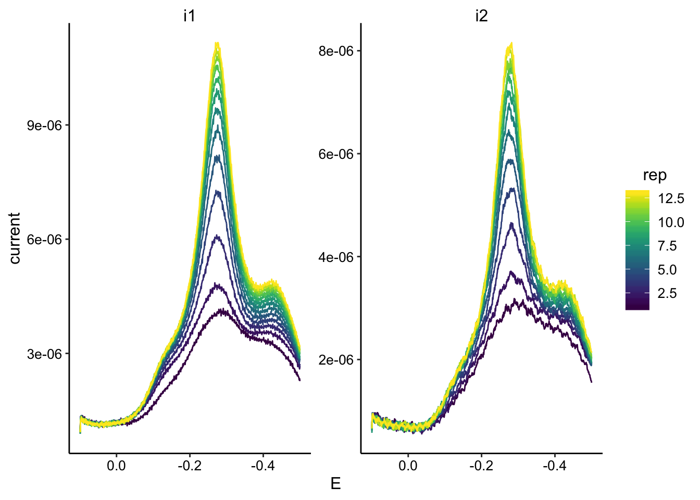
swv_soak2_max <- swv_soak2_data %>% group_by(rep, electrode) %>%
filter(E < -0.15 & E > -0.35) %>% mutate(max_current = max(abs(current))) %>%
filter(abs(current) == max_current)
ggplot(swv_soak2_max, aes(x = minutes, y = max_current, color = electrode)) +
geom_point()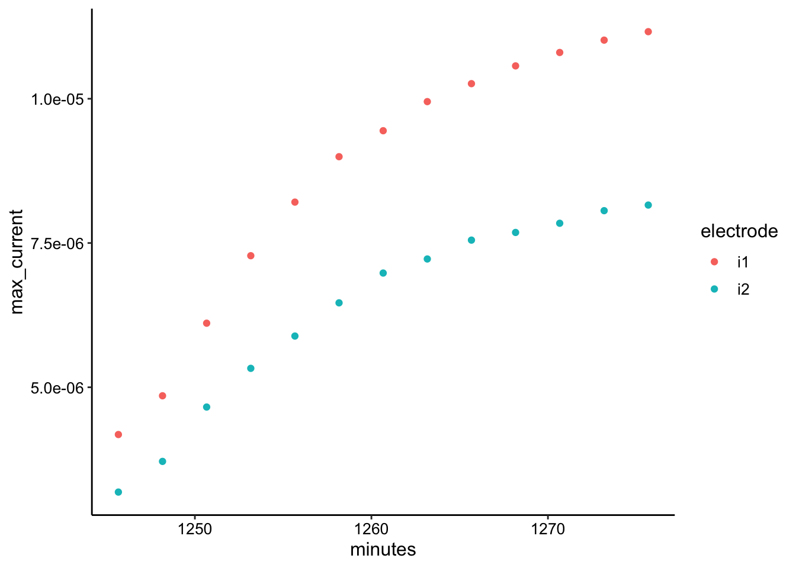
ggplot(swv_soak2_data, aes(x = E, y = current, color = rep, group = rep)) +
geom_path() + geom_point(data = swv_soak2_max, aes(x = E,
y = max_current), color = "red", size = 2) + facet_wrap(~electrode,
scales = "free") + scale_color_viridis() + scale_x_reverse()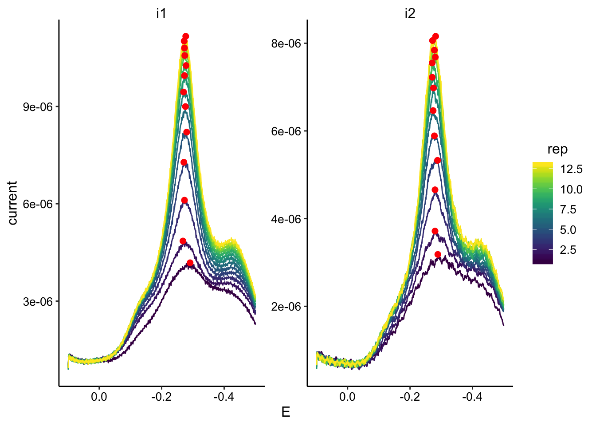
GC
soak2_data_path = "../data/soak_2/"
# divide swv into rep and subrep and then subtract 1 from rep
# to match with GC
GC_soak2_filenames <- dir(path = soak2_data_path, pattern = "[gc]+.+[txt]$")
GC_soak2_file_paths <- paste(soak2_data_path, GC_soak2_filenames,
sep = "")
GC_soak2_data_cols <- c("E", "i1", "i2")
filename_cols = c("echem", "rep")
GC_skip_rows = 21
GC_soak2_data <- echem_import_to_df(filenames = GC_soak2_filenames,
file_paths = GC_soak2_file_paths, data_cols = GC_soak2_data_cols,
skip_rows = GC_skip_rows, filename_cols = filename_cols,
rep = T, PHZadded = F)
ggplot(GC_soak2_data, aes(x = E, y = current, color = rep, group = rep)) +
geom_path() + facet_wrap(~electrode, scales = "free") + scale_color_viridis() +
scale_x_reverse()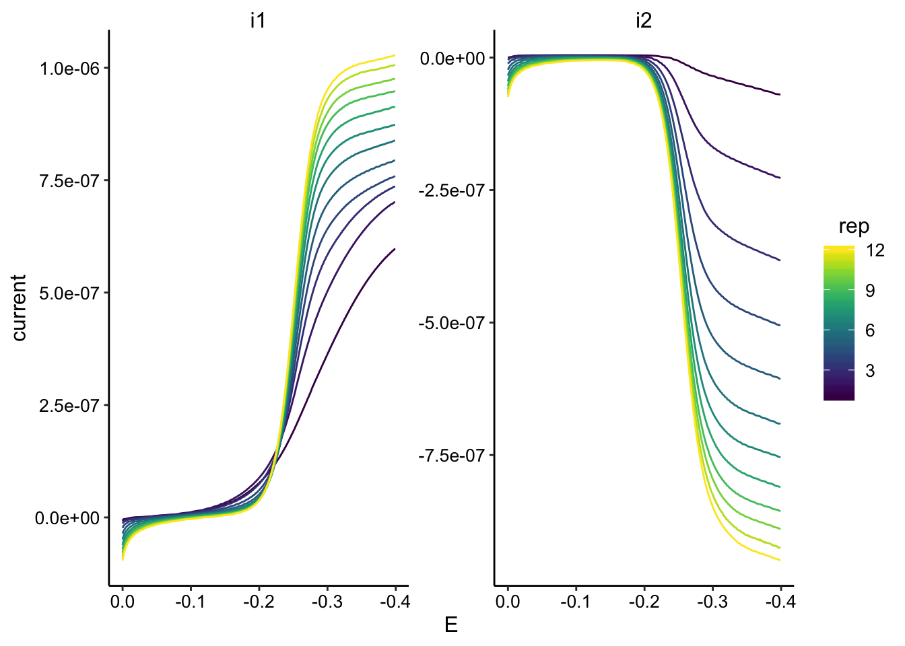
GC_soak2_max <- GC_soak2_data %>% group_by(rep, electrode) %>%
filter(E < -0.2) %>% mutate(max_current = max(abs(current))) %>%
filter(abs(current) == max_current)
ggplot(GC_soak2_max, aes(x = minutes, y = max_current, color = electrode)) +
geom_point()
ggplot(GC_soak2_data, aes(x = E, y = abs(current), color = rep,
group = rep)) + geom_path() + geom_point(data = GC_soak2_max,
aes(x = E, y = max_current), color = "red", size = 2) + facet_wrap(~electrode) +
scale_color_viridis() + scale_x_reverse()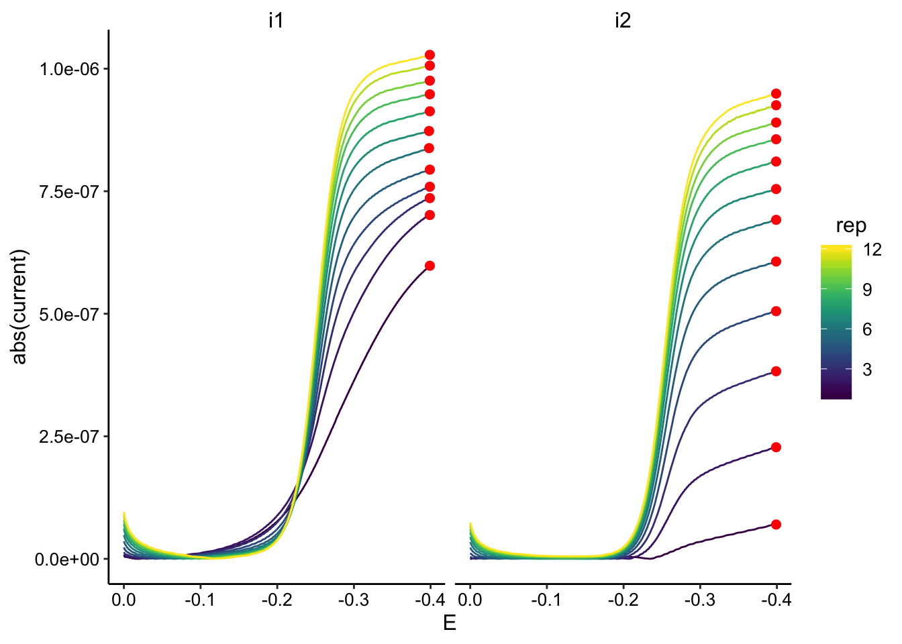
SWV vs. GC
soak_max_comb_i1 <- left_join(swv_soak2_max %>% ungroup() %>%
filter(electrode == "i1") %>% mutate(rep = rep - 1), GC_soak2_max %>%
filter(electrode == "i2"), by = c("rep"), suffix = c("_swv",
"_gc"))
ggplot(soak_max_comb_i1, aes(x = max_current_swv, y = max_current_gc)) +
geom_point() + geom_smooth(data = soak_max_comb_i1, method = "lm")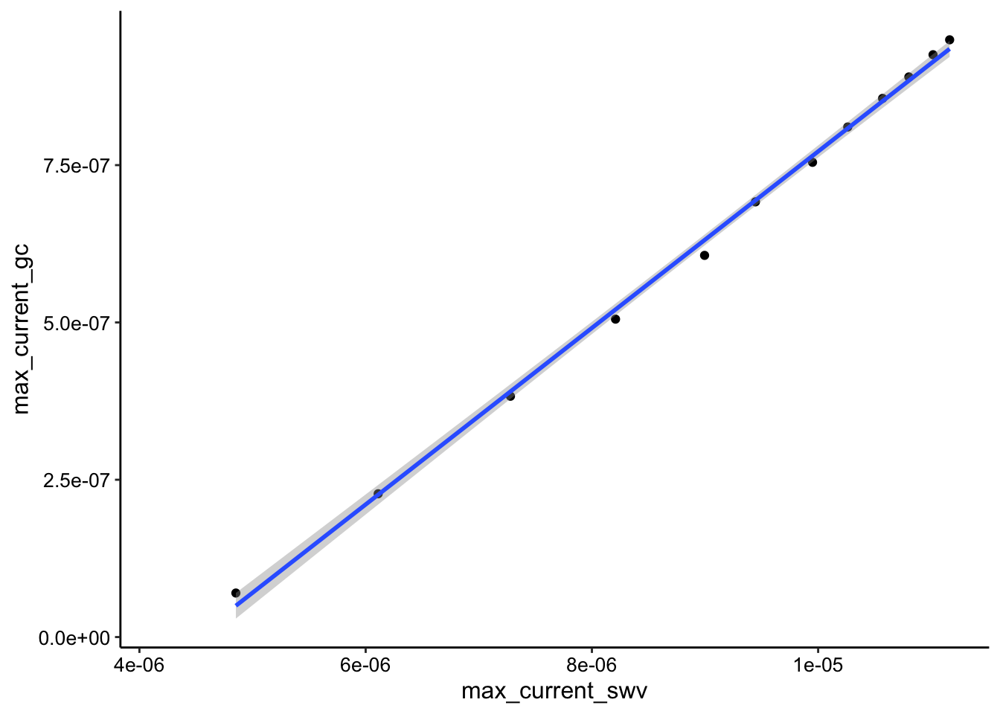
lm_soak2 <- tidy(lm(max_current_gc ~ max_current_swv, data = soak_max_comb_i1 %>%
filter(rep < 10)), conf.int = T) %>% filter(term == "max_current_swv") %>%
mutate(dap = dap_from_swvGC(m = estimate)) %>% mutate(dap_high = dap_from_swvGC(m = conf.high)) %>%
mutate(dap_low = dap_from_swvGC(m = conf.low)) %>% mutate(dataset = "SWVvsGC")
lm_soak2 %>% kable() %>% kable_styling()| term | estimate | std.error | statistic | p.value | conf.low | conf.high | dap | dap_high | dap_low | dataset |
|---|---|---|---|---|---|---|---|---|---|---|
| max_current_swv | 0.1376003 | 0.0022443 | 61.31038 | 0 | 0.1322933 | 0.1429073 | 3.3e-06 | 3.5e-06 | 3e-06 | SWVvsGC |
soak_max_comb_i2 <- left_join(swv_soak2_max %>% ungroup() %>%
filter(electrode == "i2") %>% mutate(rep = rep - 1), GC_soak2_max %>%
filter(electrode == "i2"), by = c("rep"), suffix = c("_swv",
"_gc"))
ggplot(soak_max_comb_i2, aes(x = max_current_swv, y = max_current_gc)) +
geom_point() + geom_smooth(data = soak_max_comb_i2, method = "lm")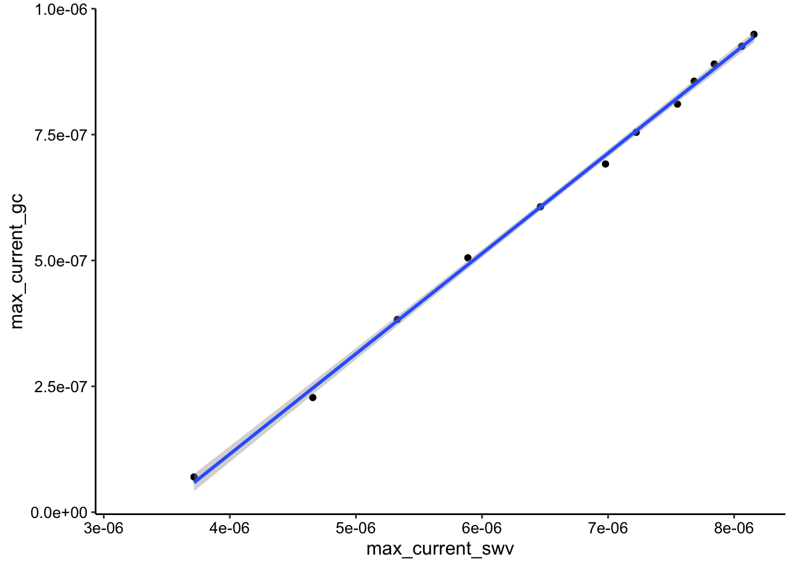
lm_soak2_i2 <- tidy(lm(max_current_gc ~ max_current_swv, data = soak_max_comb_i2 %>%
filter(rep < 10)), conf.int = T) %>% filter(term == "max_current_swv") %>%
mutate(dap = dap_from_swvGC(m = estimate)) %>% mutate(dap_high = dap_from_swvGC(m = conf.high)) %>%
mutate(dap_low = dap_from_swvGC(m = conf.low)) %>% mutate(dataset = "SWVvsGC")
lm_soak2_i2 %>% kable() %>% kable_styling()| term | estimate | std.error | statistic | p.value | conf.low | conf.high | dap | dap_high | dap_low | dataset |
|---|---|---|---|---|---|---|---|---|---|---|
| max_current_swv | 0.1973125 | 0.0032121 | 61.42831 | 0 | 0.1897171 | 0.2049078 | 6.7e-06 | 7.3e-06 | 6.2e-06 | SWVvsGC |
Output files
# SWV
swv_max_ctDNA <- bind_rows(swv_transfer2_max %>% mutate(reactor = "transfer_2"),
swv_transfer3_max %>% mutate(reactor = "transfer_3"), swv_soak2_max %>%
mutate(reactor = "soak_2"))
# write_csv(swv_max_ctDNA,
# '08_13_19_processed_swv_max_ctDNA.csv')
# GC
gc_max_ctDNA <- bind_rows(GC_transfer2_max %>% mutate(reactor = "transfer_2"),
GC_transfer3_max %>% mutate(reactor = "transfer_3"), GC_soak2_max %>%
mutate(reactor = "soak_2"))
# write_csv(gc_max_ctDNA,
# '08_13_19_processed_gc_max_ctDNA.csv')
# SWV - GC
swvGC_ctDNA <- bind_rows(tran_max_comb_i1 %>% mutate(reactor = "transfer_2"),
tran_max_comb_i2 %>% mutate(reactor = "transfer_2"), tran3_max_comb_i1 %>%
mutate(reactor = "transfer_3"), tran3_max_comb_i2 %>%
mutate(reactor = "transfer_3"), soak_max_comb_i1 %>%
mutate(reactor = "soak_2"), soak_max_comb_i2 %>% mutate(reactor = "soak_2"))
# write_csv(swvGC_ctDNA,
# '08_13_19_processed_swvGC_ctDNA.csv')